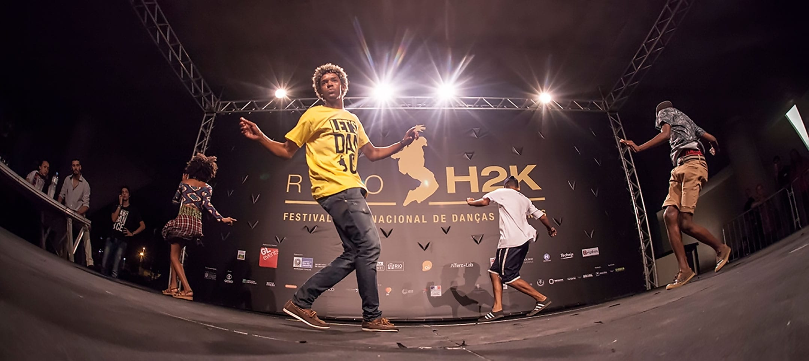
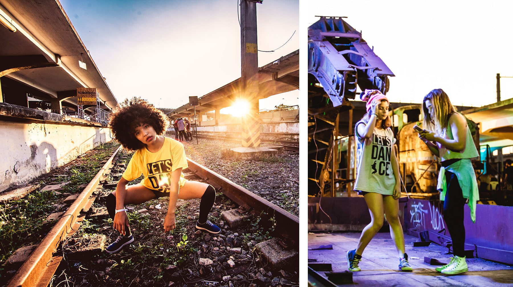
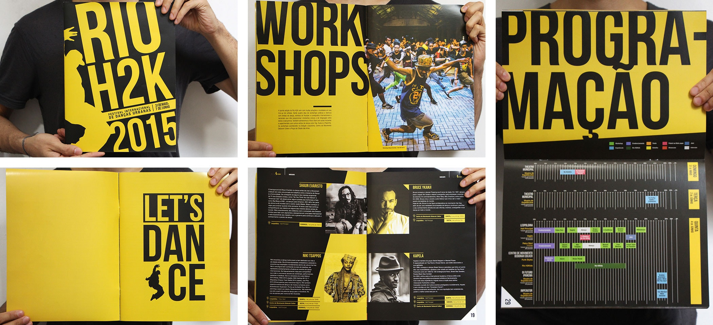
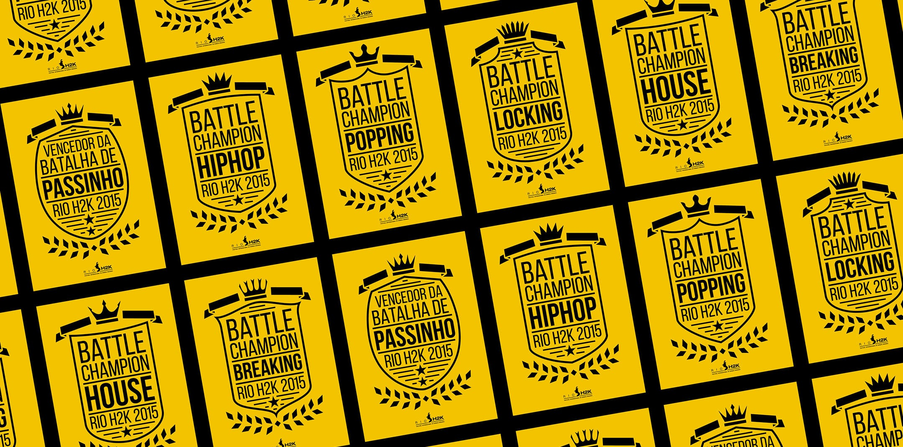
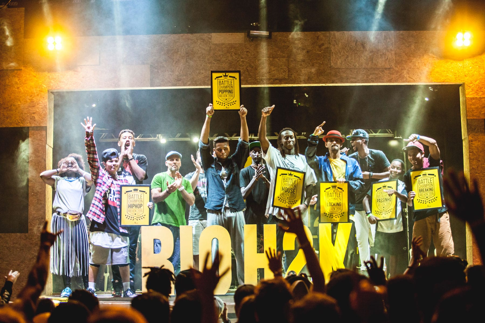

Rio H2K
O Rio H2K é um evento internacional de danças urbanas realizado anualmente no Rio de Janeiro. Na edição de 2015 integrei sua equipe de design dentro da produtora Araucária e produzi o programa do evento, a estampa da camisa e os quadros que serviram como troféu para as competições populares.
    